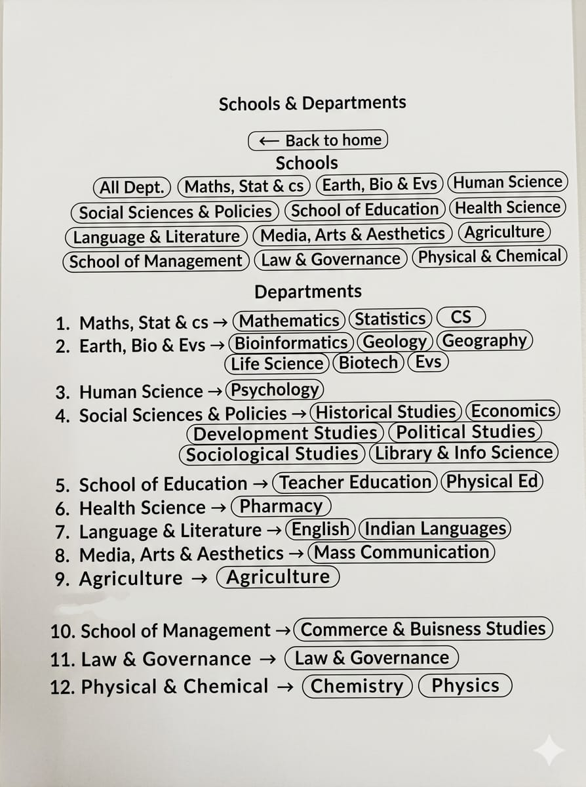

Academics
Department of Mass Communication
Department profile, courses, faculty and memories.

About the Department
Department details will load here.
- Foundation
- 2012
- Courses
- UG, PG, PhD
- HoD
- Head of Department
Courses Offered
- UG Program
- PG Program
- PhD Program
Faculty Members
| Name | Position | Department | Contact |
|---|